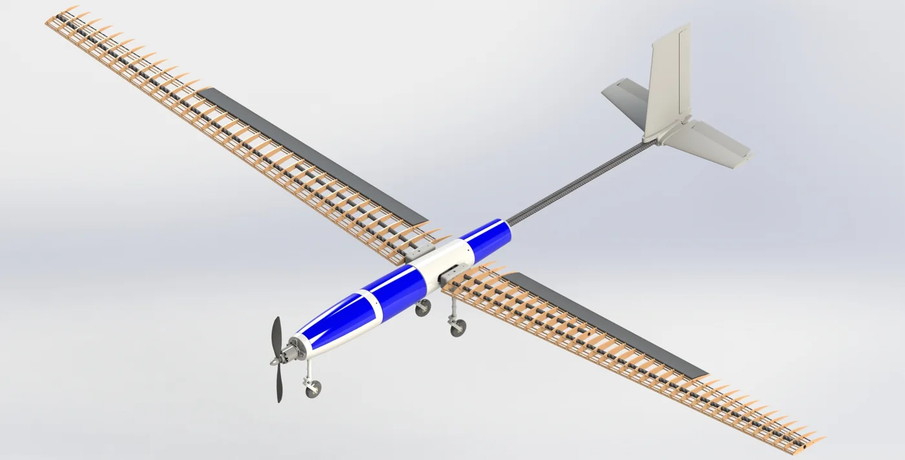
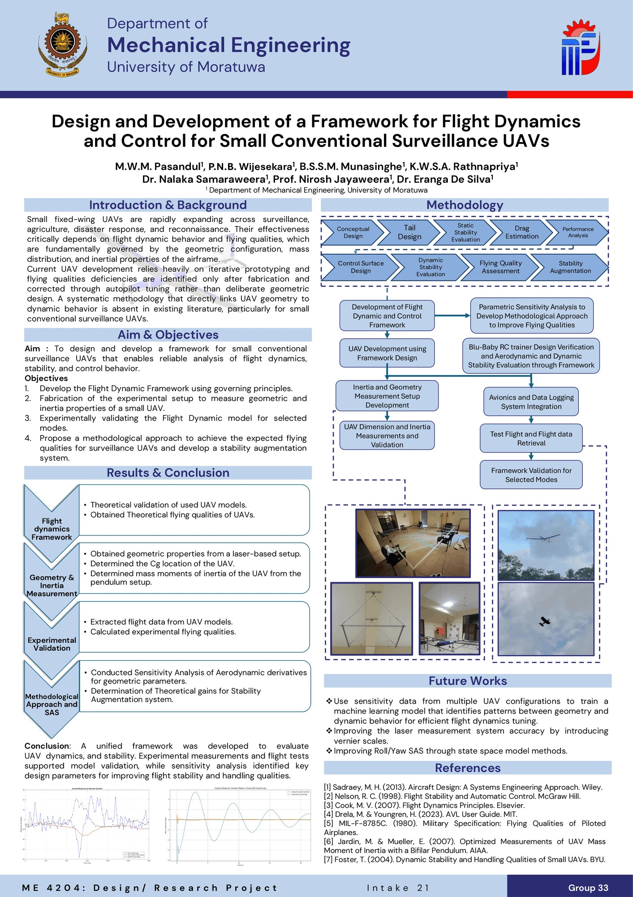

Flight Dynamics and Control Framework for Small Conventional UAVs
Department of Mechanical Engineering · University of Moratuwa
The project established a complete workflow for connecting UAV geometric design with its actual flight-dynamic behaviour. First, a parametric sensitivity analysis was conducted to determine how changes in major geometric and mass-related parameters influence the short-period, phugoid, Dutch-roll, roll-subsidence, and spiral modes. Based on the developed numerical framework, a fixed-wing UAV was then fabricated and equipped with an APM 2.8 flight controller to provide control, stabilization, navigation, and initial flight-data recording capabilities. During flight testing, several practical limitations were identified in both the fabricated aircraft and the original data-acquisition method. Therefore, an independent Arduino-based data-acquisition system was developed using an IMU, Kalman filtering, SD-card storage, and an input-identification mechanism. After difficulties were encountered while obtaining reliable modal responses from the first fabricated UAV, a stable Blu-Baby RC aircraft was used as an additional validation platform. The recorded pitch-angle and pitch-rate responses were pre-processed and analysed using FFT and Prony’s method to estimate the experimental dynamic-mode characteristics and compare them with the numerical predictions.



Sensitivity Analysis Procedure
Purpose of the Sensitivity Analysis
The parametric sensitivity analysis was conducted to identify how changes in the geometric and mass-related properties of a small fixed-wing UAV affect its dynamic behaviour. The main objective was to determine which design parameters could be adjusted during the preliminary design stage to improve the aircraft’s inherent stability and flying qualities.
This approach supports passive stabilization, in which desirable dynamic characteristics are achieved through appropriate airframe geometry, aerodynamic configuration, centre-of-gravity location, and mass distribution. Compared with active stabilization methods that depend on continuous sensor feedback, actuator corrections, and complex control algorithms, passive stabilization can be more energy-efficient because it reduces the control effort required to maintain stable flight. It can also lower onboard computational demand, reduce repeated control-surface movements, and improve reliability when sensor data or control-system performance is limited.
Active stabilization may still be required to achieve precise control, disturbance rejection, or autonomous operation. However, designing the aircraft to possess satisfactory inherent stability first reduces the workload placed on the flight controller. Therefore, the sensitivity analysis was used to identify geometric modifications that could improve dynamic behaviour before relying on stability-augmentation systems.
The analysis considered the five main dynamic modes of a conventional fixed-wing UAV:
- Short-period mode
- Phugoid mode
- Dutch-roll mode
- Roll-subsidence mode
- Spiral mode
Instead of improving stability only through repeated fabrication, flight testing, and controller tuning, the analysis provided a numerical method for identifying the parameters with the greatest influence on each mode. This allowed the UAV geometry to be systematically refined before final fabrication and reduced dependence on complex active-control solutions.
Baseline UAV Configuration
A baseline UAV configuration was established using the developed Python-based flight-dynamics framework. This configuration included the aircraft’s:
- Main-wing geometry
- Horizontal- and vertical-tail geometry
- Fuselage dimensions
- Control-surface geometry
- Aircraft mass
- Centre-of-gravity position
- Moments of inertia
- Cruise velocity and operating condition
The baseline configuration was used as the reference for the complete sensitivity analysis. Selected design parameters were varied individually while the remaining parameters were maintained as consistently as possible.
However, because aircraft geometric parameters are interconnected, changing one parameter could affect several other properties. For example, modifying the wing aspect ratio changed the wing span and chord, while changing the tail-volume ratio affected the tail area or tail arm. Therefore, the complete geometry and associated aerodynamic properties were recalculated for each modified configuration.
Parameters Considered
The geometric and mass-related parameters were selected according to their expected influence on UAV dynamic behaviour. The main parameters investigated included:
- Main wing aspect ratio
- Main wing sweep angle
- Main wing dihedral angle
- Main wing aerofoil
- Horizontal tail volume ratio
- Horizontal tail sweep angle
- Horizontal tail lift-curve slope
- Vertical tail volume ratio
- Vertical tail lift-curve slope
- Centre of gravity position
- Pitch moment of inertia
- Roll moment of inertia
- Yaw moment of inertia
- Cruise velocity
Each parameter was varied across a practical design range. For every variation, a new UAV configuration was generated and analysed.
Sensitivity Analysis Procedure
The sensitivity analysis process followed a repeated numerical workflow. First, the baseline geometry and operating conditions were supplied to the flight-dynamics framework. The selected parameter was then changed incrementally while the other input conditions were kept unchanged where possible.
For each modified configuration, the framework automatically:
- Updated the affected UAV geometry.
- Generated the required AVL geometry and input files.
- Executed AVL through the Python environment.
- Extracted aerodynamic stability derivatives and eigenvalues.
- Identified the corresponding dynamic modes.
- Calculated natural frequencies, damping ratios, or time constants.
- Stored the results for comparison with the baseline aircraft.
This automated process allowed many geometric configurations to be evaluated without manually preparing separate AVL models for every case. It also ensured that the same calculation procedure was applied consistently throughout the study.
Normalized Sensitivity
The parameters investigated had different units and numerical ranges. Therefore, normalized sensitivity was used to compare their relative influence. Normalized sensitivity represented the percentage change in a dynamic characteristic caused by a one-percent change in a selected design parameter. This allowed parameters such as aspect ratio, tail-volume ratio, sweep angle, and moment of inertia to be compared on a common basis.
For relationships that showed an approximately consistent trend, regression analysis was used to estimate the normalized sensitivity coefficient. Some parameter variations produced nonlinear responses. In such cases, the complete trend was considered instead of representing the behaviour using a single sensitivity value.
Results of the Sensitivity Analysis
Short-Period Sensitivity Results
The short-period response was strongly influenced by the horizontal tail design, static margin, centre of gravity position, and pitch moment of inertia. The horizontal tail volume ratio produced one of the clearest and most predictable effects. For the investigated UAV configuration:
A 1% increase in horizontal tail volume ratio produced approximately a 1.03% increase in short-period natural frequency and approximately a 0.68% increase in short-period damping ratio.
Increasing the horizontal tail volume strengthened the pitching moment response generated by the tail. Therefore, it provided an effective geometric parameter for adjusting the short-period characteristics.
The centre of gravity position also had a significant influence. Moving the centre of gravity changed the static margin and consequently modified both the frequency and damping of the short-period response.
The pitch moment of inertia affected how rapidly the UAV responded to a pitching moment. A lower pitch inertia produced a faster response and a higher natural frequency. However, changing the inertia required rearranging onboard components and therefore had to be considered together with the centre of gravity position.
Main wing and horizontal tail sweep also affected the short-period characteristics, although their effects were more nonlinear because they modified several aerodynamic properties simultaneously.
Phugoid Sensitivity Results
The phugoid response was affected mainly by wing geometry, aerodynamic efficiency, cruise velocity, drag characteristics, and the overall longitudinal configuration. The main wing aspect ratio showed a relatively consistent influence on the phugoid frequency. Increasing the wing aspect ratio from approximately 7 to 9 produced an increase in the calculated phugoid frequency. For the analysed range:
A 1% increase in wing aspect ratio produced approximately a 0.2429% increase in phugoid natural frequency.
The phugoid damping response was less linear. This was because changing the aspect ratio also affected induced drag, lift-to-drag ratio, wing geometry, and the aerodynamic derivatives associated with aircraft speed.
Therefore, phugoid tuning could not be based on aspect ratio alone. It required consideration of the aircraft’s aerodynamic efficiency, operating velocity, wing configuration, and propulsion effects.
Dutch-Roll Sensitivity Results
The Dutch-roll response was mainly affected by the vertical tail design, wing sweep, wing dihedral, and yaw-related inertia properties. The vertical tail volume ratio influenced both the directional restoring tendency and yaw damping of the UAV. Increasing the vertical tail contribution generally changed the Dutch-roll frequency and damping. However, the variation was not consistently linear throughout the complete range.
Wing sweep and dihedral also affected the Dutch-roll response because they changed the coupling between rolling and yawing motion. Therefore, vertical tail volume, wing sweep, and dihedral needed to be evaluated together rather than being adjusted independently.
The analysis showed that improving one lateral characteristic could negatively affect another. Consequently, Dutch-roll tuning required a balanced selection of vertical-tail and wing geometry.
Roll-Subsidence Sensitivity Results
The roll-subsidence response was influenced mainly by the roll moment of inertia, wingspan, aspect ratio, sweep angle, and aerodynamic roll damping. Increasing the mass located far from the aircraft centreline increased the roll moment of inertia and resulted in a slower roll response. Reducing the roll moment of inertia allowed the aircraft to respond and settle more rapidly after a rolling disturbance.
Wing geometry also modified aerodynamic roll damping. However, the resulting trends were not always linear because wing modifications affected both aerodynamic derivatives and mass distribution properties. Therefore, roll-subsidence tuning required consideration of both the external wing geometry and the internal component arrangement.
Spiral-Mode Sensitivity Results
Wing dihedral was identified as the most influential parameter for modifying the spiral-mode behaviour.
Increasing the wing dihedral angle from approximately 0° to 8° reduced the spiral-mode time constant from approximately 40.2 seconds to 3.0 seconds — a reduction of more than 92%.
The result demonstrated that relatively small changes in wing dihedral could produce a significant change in the spiral response. However, excessive dihedral could also affect Dutch-roll behaviour and roll-control performance. Therefore, the final dihedral angle had to be selected by considering the combined lateral-directional response rather than only the spiral mode.
Proposed Fine-Tuning Approach
Based on the sensitivity results, a systematic fine-tuning approach was proposed. The short-period characteristics should first be adjusted using:
- Horizontal-tail volume ratio
- Centre of gravity position
- Horizontal tail effectiveness
- Pitch moment of inertia
The spiral and Dutch-roll characteristics should then be considered together using:
- Wing dihedral
- Vertical tail volume ratio
- Wing sweep
- Directional-stability parameters
The roll-subsidence response could subsequently be refined using:
- Roll moment of inertia
- Wing geometry
- Internal mass distribution
Finally, the phugoid response could be adjusted using:
- Wing aspect ratio
- Tail aerodynamic efficiency
- Cruise velocity
- Overall longitudinal configuration
This approach allowed the most influential parameters to be modified first while reducing unwanted changes to the other dynamic modes.
Summary
The sensitivity analysis established a direct connection between UAV design parameters and dynamic-mode characteristics. Horizontal tail volume ratio was identified as an effective parameter for short-period tuning, while wing dihedral had the strongest influence on the spiral mode. Wing aspect ratio affected the phugoid frequency, and the vertical tail configuration influenced the Dutch-roll response.
The results demonstrated that UAV dynamic behaviour could be improved through systematic geometric modification before relying on stability-augmentation systems or repeated physical prototypes. The analysis therefore formed the numerical foundation for the subsequent fabrication and flight validation stages of the project.
Fabrication of the UAV and Integration of the APM 2.8 Flight Controller
Purpose of UAV Fabrication
A physical fixed-wing UAV was fabricated to support experimental flight testing and validate the dynamic behaviour predicted by the developed framework. The aircraft was designed as a lightweight conventional UAV with sufficient structural strength and internal space for the propulsion system, flight controller, receiver, sensors, battery, and data-acquisition equipment.
Airframe Fabrication
The UAV had an approximately 2.5 m wingspan. The wing structure was constructed using hollow carbon-fibre tubes as the main spars and laser-cut plywood ribs to maintain the required aerofoil profile. A fabrication jig was used to control rib spacing and alignment, and the completed structure was covered with heat-shrink film to produce a lightweight aerodynamic surface.
The central wing box was manufactured from welded aluminium members and acted as the main structural connection between the wings, fuselage, landing gear, propulsion system, and tail booms. The fuselage pod was produced using 3D printing with a low infill percentage to reduce weight while maintaining sufficient stiffness.
Twin carbon-fibre tubes were used as tail booms to support the horizontal and vertical tail surfaces. The elevator and rudder servos were positioned closer to the fuselage, with control inputs transmitted through push rods. This reduced the mass located far behind the centre of gravity and helped limit the pitch moment of inertia.
The battery and payload positions were made adjustable so that the aircraft centre of gravity could be corrected before flight. The completed UAV incorporated the motor, propeller, electronic speed controller, receiver, control servos, landing gear, flight controller, and onboard data-acquisition hardware.
APM 2.8 Integration
The APM 2.8 flight controller was installed close to the aircraft centre of gravity and configured using ArduPilot fixed-wing firmware through Mission Planner. It was connected to the receiver, electronic speed controller, aileron, elevator and rudder servos, GPS module, and power system.
The aircraft was configured with manual and assisted flight modes. Assisted modes were used during initial flight testing, take-off, and recovery, while manual mode was selected during dynamic-response testing to avoid the flight controller significantly modifying the aircraft’s natural response.
The APM recorded flight parameters including pitch, roll, yaw, angular rates, accelerations, GPS position, altitude, and ground speed. These records provided the initial flight data for assessing the UAV response and identifying the limitations of the original logging arrangement.
Ground and Pre-Flight Testing
Before flight, the control-surface directions, servo operation, motor response, radio range, centre of gravity position, structural connections, sensor calibration, and APM flight modes were checked. Taxi and low-speed tests were also conducted to confirm directional control and propulsion performance. These checks ensured that the aircraft was structurally secure, correctly balanced, and ready for the initial flight-test programme.
Flight-Data Pre-Processing and Validation Using the Blu-Baby Aircraft
Limitations of the Initial Data-Collection Method
The APM 2.8 was initially used for recording the UAV’s flight response. However, its effective sampling rate and onboard memory were insufficient for reliably capturing rapid short-period oscillations. A considerable portion of the available recording time was also required for take-off, trimming, and positioning the aircraft before the test manoeuvres. To overcome these limitations, an independent Arduino-based data-acquisition system was developed.
Arduino-Based Data-Acquisition System
The new system consisted of an Arduino Nano, an IMU, and an SD-card module. It recorded pitch angle, pitch rate, time, and input-marker information in CSV format at a higher sampling rate than the APM logging system. A Kalman filter was implemented to combine accelerometer and gyroscope measurements. This reduced accelerometer noise and gyroscope drift while preserving the rapid pitch response required for modal analysis.
A toggle switch connected through an auxiliary radio channel was used to mark the beginning of each elevator-doublet manoeuvre. Recording this switch signal with the IMU data made it easier to identify and extract the exact response region during post-processing.
Difficulties Encountered with the Fabricated UAV
Several difficulties were experienced during flight testing of the fabricated UAV. The aircraft showed roll-related instability and required frequent corrective pilot inputs, making it difficult to obtain a clean natural response after the elevator doublet.
The available flying area and take-off distance were also limited, and the aircraft often had to be turned soon after take-off. This reduced the time available to establish a steady trimmed condition before beginning the test. Other practical issues included:
- Structural vibration affecting the IMU measurements
- Control-surface backlash and servo delay
- Wind disturbances and variation in flight speed
- Damage and repairs during repeated test attempts
- Difficulty obtaining a sufficiently long undisturbed response
Because of these conditions, the measured response contained both the aircraft’s natural motion and corrective pilot inputs, reducing the reliability of the modal-identification results.
Validation Using the Blu-Baby Aircraft
A Blu-Baby RC aircraft was selected as a secondary validation platform because it had more stable and predictable flight behaviour. Its geometry, mass properties, centre of gravity position, and operating condition were first entered into the developed numerical framework. The Arduino data-acquisition system was then installed on the Blu-Baby aircraft. The same IMU, Kalman filter, SD-card recording, and toggle-switch marking method were used so that the experimental procedure remained consistent.
During testing, the aircraft was brought to an approximately steady flight condition before an elevator doublet was applied. The resulting pitch-angle and pitch-rate responses were recorded for post-processing.
Data Pre-Processing
After each flight, the Arduino CSV files and APM logs were transferred for analysis. The recorded toggle-switch signal was used to identify each doublet manoeuvre. The selected data were then processed by:
- Extracting the doublet response region.
- Removing the initial steady-state offset.
- Checking the sampling interval and data continuity.
- Removing corrupted or unsuitable measurements.
- Separating repeated test manoeuvres.
- Preparing the pitch-angle and pitch-rate signals for modal analysis.
Careful selection of the time window was necessary. A very short window could exclude useful response data, while a long window could include gusts, turns, or pilot corrections.
FFT and Prony Analysis
The Fast Fourier Transform was used to identify the dominant frequency in the measured pitch response and compare repeated flight tests. However, since the recorded response was a short, decaying transient, FFT provided limited frequency resolution and could not directly determine damping.
Prony’s method was therefore used to estimate both the frequency and damping ratio of the response. A second-order Prony model was applied to the pitch-angle and pitch-rate data to identify the dominant short-period pole pair. The pitch-rate signal was selected as the main validation signal because it represented the rapid rotational motion of the short-period mode more clearly than the pitch-angle signal.
Comparison with the Numerical Model
The experimentally identified short-period frequency and damping ratio were compared with the values predicted by the numerical framework. Some differences were observed because the numerical model assumed a rigid aircraft operating near a steady trimmed condition. The real aircraft was affected by structural flexibility, pilot correction, servo dynamics, sensor noise, manufacturing deviations, propeller slipstream, and uncertainty in the inertia and centre of gravity values.
The short-period response was successfully identified from the Blu-Baby flight data. The slower phugoid mode could not be reliably extracted, because a longer undisturbed flight period was required.
Summary
The initial difficulties experienced with the fabricated UAV led to the development of an improved Arduino-based data-acquisition and pre-processing method. The Blu-Baby aircraft provided a more stable platform for collecting clean pitch-response data.
The final workflow combined IMU measurement, Kalman filtering, toggle-switch input identification, data-window extraction, FFT analysis, and Prony-based modal identification. This enabled the experimental short-period response to be compared with the predictions of the developed flight-dynamics framework.
Project Poster Presentation and Final Thesis
The research poster below summarises the framework, the sensitivity study, the fabricated aircraft, and the experimental modal-identification results on a single sheet. The complete final thesis is available to read in full.
